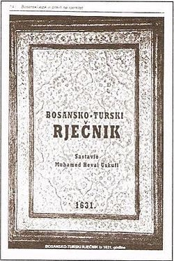

Bosanski jezik je južnoslavenski standardni jezik koji koriste uglavnom Bošnjaci, ali i značajan broj ostalih osoba bosanskohercegovačkog porijekla.
Bosanski je službeni jezik u Bosni i Hercegovini, uz srpski i hrvatski, a regionalni na Kosovu, u Sandžaku (Srbija) i u Crnoj Gori.
Prema popisu iz 2013., 1.866.585 stanovnika u Bosni i Hercegovini govori bosanskim jezikom, što predstavlja 52,86% ukupnog stanovništva Bosne i Hercegovine. Osim toga, u Srbiji ovim jezikom se služi 138.871 stanovnik, Crnoj Gori 33.077, Hrvatskoj 16.856, na Kosovu 28.898 i Zapadnoj Evropi i Sjevernoj Americi 150.000 stanovnika, te neutvrđen broj iseljenika u Turskoj (neki izvori pretpostavljaju 100.000 do 200.000 govornika)
Pisma bosanskog jezika su latinica i ćirilica, mada se ćirilica sve slabije koristi. Historijska pisma su bosančica i arebica.
Nauka koja se bavi bosanskim jezikom naziva se bosnistika.
Osobine bosanskog jezika
Bosanski jezik spada u vrstu tonskih jezika koji se u lingvistici nazivaju jezici s tonskim akcentom, a za njega je karakteristično postojanje dvaju tonova (silazni i uzlazni) i dviju vokalnih dužina (kratak i dug vokal). Jednosložne riječi mogu imati samo silazni ton, mada im vokal može biti i kratak i dug[1].

Akademik Ferid Muhić
Prvi rječnik bosanskog jezika napisan je gotovo 200 godina prije prvog rječnika srpskog jezika
Jezik Bošnjaka je izvorno i autentično bosanski. Ni srpski, ni hrvatski; ni srpsko-hrvatski, ni hrvatsko-srpski. Historijski, odnosno, hronološki, bosanski jezik oficijaliziran je znatno prije srpskog i hrvatskog jezika.
Prvi poznati rječnik bosanskog jezika napisan je 1626. godine, a štampan je 1631. godine, dakle gotovo dvije stotine godina prije prvog rječnika srpskog jezika, koji je, na osnovama bosanskog jezika, sačinio Vuk Karadžić, i više od dvije stotine godina prije nego što je Ljudevit Gaj kodificirao hrvatski književni jezik, takođe pod snažnim utjecajem bosanskog jezika.
Ako podsjetimo na činjenicu da je bosanski jezik pod svojim imenom i svojim pismom nazvanim bosančica, ubilježio i osvjedočio svoje postojanje još krajem IX, i početkom X vijeka na čuvenim Humskim pločama, a uveliko funkcionirao i kao jezik i kao pismo od vremena Kulina Bana kroz cijeli period svoje do otomanske državnosti, biće nam jasno koliko je duga tradicija bosanskog jezika, koliko je dubok njegov utjecaj na kasnije kodificiranje modernog sprskog i hrvatskog jezika, prije nego što je naziv “bosanski jezik” oficijalno zabranjen. U procesu početne kodifikacije u književne jezike, srpski i hrvatski jezik se oslanjaju na temelje bosanskog jezika i ostaju unutar njegovih gramatičkih, i posebno, semantičkih koordinata.
Zbog toga se, na osnovu činjenica iz historije lingivistike na prostorima gdje danas žive ova tri naroda, može konstatirati da je srpski književni jezik istočna, a da je hrvatski jezik zapadna varijanta bosanskog jezika. Ovo se jasno vidi i iz činjenica da je spomenuti rječnik srpskog jezika Vuka Karadžića, zaista naslovljen kao “Rječnik” a ne “Rečnik”, i da je u njemu isključivo i bez izuzetka upotrijebljen bosanski izgovor: postoji samo forma “čovjek” nigdje “čovek”; “dijete” a nigdje “dete”; “mlijeko”, “lijepo”, “vrijedno”, a nikada “mleko”,”lepo”, “vredno”, i td.
Na najvećem dijelu teritorija Srbije i Hrvatske (praktično, izuzetak su samo teritorije koje se nalaze neposredno uz granice sa Bosnom), govor Srba i Hrvata i danas znatno odudara od kodificiranog oblika njihovog književnog jezika, tako da i jedni i drugi moraju učiti svoj književni jezik, koji je, kao što je već pokazano, u biti kodificirana varijanta bosanskog jezika.
Naprotiv, na cijeloj teritoriji Bosne, bosanski jezik je do danas ostao prirodna podloga govora koji se povijesno konstituisao upravo kao maternji jezik svih stanovnika na cijeloj teritoriji Bosne i Hercegovine, kako za ateiste tako i za vjernike, bez obzira jesu li oni muslimani, pravoslavci ili katolici, odnosno, izjašnjavaju li se kao Bošnjaci, ili kao “(Bosanski) Srbi”, odnosno kao “(Bosanski) Hrvati’[2].
Autor: Senada Đešević, prof.
HISTORIJSKI RAZVOJ BOSANSKOGA JEZIKA
Bosanski jezik, kao i drugi slovenski jezici na Balkanu nosi korijene iz praslovenskog i staroslovenskog jezika. Samostalno je počeo da se razvija od XI vijeka, od uspostavljanja jedinstvene geo-političke cjeline imenovane Bosnom i prvih pisanih spomenika na bosanskom narodnom jeziku.
RAZVOJ BOSANSKOG KNJIŽEVNOG JEZIKA
Ako pratimo razvoj pisanog jezika od XI vijeka do današnjih dana, možemo reći da postoje pet razvojnih faza, kroz koje je bosanski jezik prošao. Periodi su povezani u skladu sa istorijskim razvojem države Bosne i Hercegovine i ograničeni su velikim brojem istorijskih događaja a time i promjena koje su se u Bosni a i vezi Bosne događali.
FAZE U RAZVOJU BOSANSKOGA KNJIŽEVNOG JEZIKA
Prva faza:
BOSANSKI JEZIK XI-XV VIJEKA (DOBA SREDNJOVJEKOVNE BOSANSKE DRŽAVE)
U ovom periodu nailazimo na zastupljenost narodnog jezika i ikavice.
2. Period kada dolazi do pojave prvih pisanih spomenika. Najstariji sačuvani trag bošnjačke pismenosti na glagoljici je natpis sa crkve u Kijevcima kod Prijedora iz XI vijeka. Iz XII vijeka imamo sačuvana dva rukopisa u fragmentima koji su pisani poluoblom bosanskom glagoljicom: Grškovićev odlomak i Mihanovićev odlomak.
S kraja XII i početka XIII vijeka imamo i takozvani Splitski odlomak.
Za bosanskog feudalca Hrvoja Vukčića Hrvatinića između 1403. i 1415. piše se Hrvojev misal, takođe glagoljicom.
3. U periodu od XIII-XVI vijeka tekstovi su pretežno pisani na kamenu. To je tzv. epigrafika, tj. lapidarna-„kamena“ pismenost (pisano je na stećcima, građevinama i stolicama).
Padom Bosne i njene crkve, dolazi do nestajanja glagoljice. Za razliku od glagoljice, ćirilica je pismo koje je bilo mnogo raširenije, stoga imamo mnogo više sačuvanih spomenika upravo pisanih ovim pismom. Ovo pismo se razlikovalo od istočne makedonsko-raško-zetske ćirilice. Ovdje je riječ o zapadnoj ćirilici - bosanskoj ćirilici-bosančici.
4. Humačka ploča je najstariji pisani spomenik, pisan bosanskim jezikom. Nastala je krajem X ili početkom XI vijeka. To je natpis na Crkvi svetog Mihajla u Humcu kod Ljubuškog u Hercegovini.
5. Natpisi sa Kulinove crkve u Biskupićima-Mihanovićima kod Visokog iz sredine XII vijeka (Kulinova ploča), i natpis sa Crkve Kulinovog velikog sudije Gradiške iz Podbriježja kog Zenice (XII-XIII vijek).
6. Crkveni rukopisi su uglavnom prijevodi Novog zavjeta, odnosno prepisi ranijih prijevoda sa glagoljskih rukopisa.
- Miroslavljevo jevanđelje, najstariji i najljepši rukopis crkvenog karaktera pisan ćirilicom u Humu za kneza Miroslava iz XII vijeka;
- Jevanđelje Divoša Tihorodića iz XIV vijeka;
- Batalovo jevanđelje iz XIV vijeka;
. Srećkovićevo jevanđelje iz XIV-XV vijeka;
- Mletački zbornik iz XIV vijeka;
- Čajničko jevanđelje iz XIV vijeka, te rukopis
- Krstjanina Radosava iz XV vijeka.- Kulinova povelja je najstariji pisani spomenik na narodnom jeziku svjetovnog karaktera (iz 1189. godine), pisan bosanskim ćiriličnim pismom, tj. bosančicom, a upućena je bila Dubrovčanima.
8. Iz XIV vijeku imamo Povijest o Aleksandru (Aleksandrida), djelo tzv. lijepe književnosti, koje govori o pobjedama Aleksandra Makedonskog.
9. Nailazimo i na svjedočenja o usmenoj lirskoj poeziji, koja se njegovala na dvorovima ali i u narodu. Posebno su bile poznate pjesme o Radosavu Pavloviću, kao i bugarštica Kako se Nikola Radanović odvrgao od svog gospodara.
10. Dominantno pismo je bosančica, koja nastaje u X vijeku u Dubrovniku i srednjoj Dalmaciji, pa i u Bosni. Uporedo su prisutne glagoljica, ćirilica i latinica.
Druga faza:
BOSANSKI JEZIK 1463-1878. GODINE (TURSKO DOBA)
- Narodni jezik koji je bio u upotrebi dobija naziv bosanski, koji je u bliskoj vezi sa turskim, arapskim, i persijskim, s jedne strane i očuvanja upotrebe vlastitoga govora srednjojužnoslovenskoga tipa s druge strane.
2. Književnost bosanskih muslimana se razvija na orijentalnim jezicima (turskom, arapskom i persijskom) i pismima. Za vrijeme turske vladavine u Bosni, turski jezik se koristio u administraciji, arapski je bio jezik vjere, a persijski jezik orijentalne poezije.
3. U ovom periodu dolazi do pojave alhamijado literature (od polovine XVII do kraja XIX vijeka) na narodnom jeziku i arapskom pismu-arebici, koje se učilo u vjerskim školama (mektebima). Naziv alhamijado izvden je od arapske riječi „ala'džemijje“ što znači strani, nearapski. U BiH ovaj oblik literature koji je bio raznovrstan i tematski i forme radi (pjesme, kratke priče, udžbenici i vjerske pouke) je karakterističan samo za muslimansku sredinu.
4. Jezik usmene narodne književnosti
Posebno se ističu naše narodne balade Hasanaginica, Smrt Omera i Merime, sevdalinke, epske junačke pjesme bošnjačkih Krajišnika, sandžački junački ep Ženidba Smailagić Meha - Avda Međedovića...
Nailazimo na odnos ikavizama i ijekavizama, izvršenu i neizvršenu novu jotaciju, šćakavizme i štakavizme...(vidi se u različitim varijantama balade Hasanaginica).
Jezik sevdalinki posjeduje zapadnobosanski, srednjobosanski i hercegovački jezički tip.
5. Epistolarna književnost ili pisma muslimanskih krajišnika (krajišnička pisma) su službenog karaktera, a nastaju u periodu od 16-18. vijeka, pisana narodnim jezikom sa dominirajućim ikavizmima i prisustvom zapadnih šćakavskih bosanskih oblika, dok su iz Hercegovine ijekavska sa novoštokavskim osobinama i bosančicom, bosanski oblik stare ćirilice, koji se upotrebljavao kao svjetovno a ne kao vjersko pismo. Bosančicu koriste bosanski begovi, pa se stoga nazivala begovo pismo ili begovica.
6. Tada nastaje prvi dvojezični rječnik (bosansko- turski) Potur-Šahidija (pučki) narodni rječnik iz 1631. godine, čiji originalni naziv glasi Magbuli-Arif, što u prijevodu znači „Što se sviđa razumnima“, čiji je autor čuveni Muhamed Hevaija (Zračni) Uskufija. Naglasila bih da je to ujedno najstariji rječnik bosanskoga jezika i ujedno dokaz vezanosti Bošnjaka za svoj vlastiti jezik i tradiciju koja se već početkom 17. vijeka ogleda u leksikografskom radu. Interesantno je da je rječnik pisan u stihovima, bogat je ne samo leksičkim pojedinostima iz bosanskoga jezika, već i upotrebom ikavizama, što je i bilo karakteristično za taj period u Bosni.
Rječnik ima tri dijela: predgovor, sam rječnik i pogovor. U predgovoru Hevaija navodi svoju biografiju, kao i razloge zbog čega je značajno da sastavi rječnik bosanskoga jezika. Pisan je na turskom jeziku u stihovima (330 stihova) po sistemu arapske metrike. Ukupno sadrži 700 riječi bosanskoga jezika.
Pored ovog rječnika sačuvani su još neki djelovi započetih rječnika u rukopisu koji su nažalost ostali nedovršeni.
U intervalu između 16-18. vijeka izvršene su značajne pravopisne reforme arebice. Nastojalo se da se riješi grafijski problem, tj. radilo se na prilagođavanju glasovnim potrebama i osobinama bosanskog jezika. Naime, arebica nije imala grafeme za obilježavanje nekih naših glasova , i obrnuto-imala je neke grafeme za koje u našem jeziku nije imalo glasova. Tek na prelazu 19-20. vijek ovaj problem je polovično riješen.
7. Bečki književni dogovor iz 1850. godine i njegov uticaj na razvoj bosanskog jezika
Godine 1850. u Beču su se sastali najistaknutiji predstavnici hrvatskih i srpskih jezičkih stručnjaka i književnika. Smatrali su da za osnovu zajedničkog jezika treba uzeti „južno narječje“, misleći na Vukov istočnohercegovački dijalekat i štokavsko narječje koje su koristili Gaj i Ilirci. Vuk je sa svojim saradnicima smatrao da svi ljudi koji govore štokavskiim narječjem su u stvari Srbi, pa tako i Bošnjaci. Stoga je njihov jezik nazvao srpskim. Reforma se odvijala prvenstveno na planu pravopisa, gramatike i leksike.
Učesnici Bečkog dogovora su prećutali bosansku a time i crnogorsku štokavsku i ijekavsku jezičku tradiciju, iako je Bosna središnji štokavski prostor.
Treća faza:
BOSANSKI JEZIK 1878-1918. GODINE (AUSTROUGARSKO DOBA)
Prvi pokušaji normiranja jezika
Najveći preporod u životu i kulturi Bošnjaka nastao je povlačenjem Turaka i dolazak Austro-Ugara u Bosnu 1878. godine. Ljudi su do tada za bosanski pisani jezik koristili arapsko pismo (arebicu), djelimično bosančicu, te Vukovu ćirilicu. Odlaskom Turaka arebica se i dalje upotrebljava, a bosančica nestaje. Dolazi do pravopisne reforme arebice u čemu je najuspješniji bio Džemaludin Čaušević. Veoma važno je bilo izvršiti pravopisnu reformu arebice zbog upotrebe jezika u muslimanskim (vjerskim) školama u kojima su udžbenici bili pisani na turskom jeziku. Stvorile su se težnje da se maternji jezik uvede u te škole, stoga je bosanski jezik ušao u nastavni plan ruždije 1884. godine. Za uvođenje narodnog jezika u vjerske škole najzaslužniji su: Sejfudin Proho, Omer Humo, i Ibrahim Seljubac. Tada počinju da se štampaju početnice pisane arebicom na bosanskom jeziku.
Muhamed Agić je 1868. godine objavio prvu početnicu. U njoj naizlazimo na miješanje ikavskih i ijekavskih oblika kao i pojavu brojnih orijentalizama.
Pri kraju turske vladavine okretanjem ka Evropi u Bosni se javljaju reformski procesi na polju obrazovanja. U drugoj polovini 19. vijeka, iako se suprostavljalo Vukovom fonološkom pravopisu, do kraja vijeka je bio prihvaćen pa i u Bosni i Hercegovini.
Godine 1867. izlazi prvi srpski bukvar pisan novim fonološkim pravopisom u Sarajevu. Tada izlazi i list Sarajevska vila.
Prvi bošnjački listovi, Bosanski vjestnik (list izlazi od 1866. do 1887. jednom sedmično), i Sarajevski cvjetnik, objavljen 1868. godine, urednika Mehmeda Šakira Kurtćehajića. U listovima se objavljuju bošnjačke lirske i epske pjesme na čistom narodnom jeziku.Oba su štampana uporedo na turskom i bosanskom jeziku, Vukovom reformisanom ćirilicom.
1. Tada dolazi do osnivanja bošnjačkih listova i časopisa. Godine 1891. počinje izlaziti prvi bošnjački list Bošnjak, štampan latinicom. Časopis je gajio jasnoću izraza, jezičku izvornost i jednostavnost. Ovu jezičku težnju, privrženost narodnom iskazu i njegovanju leksičke i gramatičke jasnoće će kasnije gajiti prvi bošnjački književni časopis Behar, pokrenut 1900.- te godine, koji je napisan latiničnim pismom. Kao Behar i naredni časopisi Gajret i Biser gajiće čistotu, jednostavnost i jasnoću izraza.
2. Na polju književnosti i jezika nailazimo na reformu Mehmed-bega Kapetanovića Ljubušaka
Krajem 80-tih i 90-tih godina 19. vijeka pojavljuju se bošnjački pisci koji pišu na maternjem jeziku i latiničnim pismom. Najznačajniji među njima je bio Mehmed-beg Kapetanović Ljubušak. On duhovno odvaja Bošnjake od orijentalne tradicije i usmjerava bošnjačlu kulturu ka evropskoj modernizaciji. Pored književne on vrši i jezičku reformu. U svojim djelima Pouka o lijepom ponašanju 1883. koja je štampana na narodnom jeziku i latinicom, zatim Narodnom blagu 1887. , prvoj zbirci bošnjačkih narodnih umotvorina, ima velik uticaj na prihvatanje latiničnog pisma kod Bošnjaka. Tome doprinose i dvije sveske Istočnog blaga, 1896. i 1897. Takođe je i prvi sakupljač dijalektološke građe u Bosni i Hercegovini. Kao osnova je maternji zapadnohercegovački ikavskoštokavski dijalekat i jezik narodne književnosti, sa vidnim odstupanjima i nedostacima.
3. Znatnu ulogu u prihvatanju latiničnog pisma imao je i zbornik austrijskog visokog činovnika i osnivača Zemaljskog muzeja u Sarajevu, Koste Hermanna, Narodne pjesme Muhamedanaca u Bosni i Hercegovini, 1888. i 1889. Epske narodne pjesme Bošnjaka pokazuju novoštokavsku jezičku podlogu, mada ima miješanja dijalekatskih tipova te miješanja ikavizama i ijekavizama.
4. Češki muzikolog Ludvig Kuba u prikupljanju bošnjačkih lirskih pjesama i sevdalinki objavljuje knjigu pod nazivom Pjesme i napjevi iz Bosne i Hercegovine.
Službeni naziv za jezik u Bosni i Hercegovini je bosanski jezik sa nadopunom bosanski zemaljski jezik.
Za vrijeme austrougarskog upravitelja Benjamina Kalaja, u Bosni je korišten isključivo naziv bosanski jezik kome je dat veliki politički značaj.
5. Fran Vuletić je izradio prvu Gramatiku bosanskoga jezika za srednje škole, 1890. godine. Naziv bosanski jezik je ovdje bio više u političke svrhe upotrebljivan.
6. Iz tog perioda imamo i prvu dvojezičnu gramatiku tursko-bosansku i bosansko-tursku, Ibrahima Edhema Berbića Bosansko-turski učitelj, objavljena u Carigradu 1893.
Nakon neuspjeha Kalajeve političke bosanske nacije te zajedničkog jezika, a pod uticajem srpskih i hrvatskih nacionalističkih organizacija (naredbom Zemaljske vlade), službeni naziv bosanski jezik je ukinut i zamijenjen nazivom srpskohrvatski 1907. godine. Istog trenutka Gramatika bosanskoga jezika mijenja svoj naziv, dok je Bošnjacima dopuštena mogućnost da u svojim nacionalnim institucijama svoj jezik imenuju bosanskim.
7. Tursko-bosanski rječnik Ahmeda Kulendera, izašao 1912. je nastavak tradicije izrade dvojezičnih tursko-bosanskih rječnika.
8. Dominantno je pismo latinica, dok je ćirilica prisutna prvenstveno u srpskim krugovima u BiH. Bosančica i arebica, pisma koja su godinama bila dominantna, sporadično su se koristila. Arebica iščezava pred latinicom i ćirilicom, dok su za bosančicu uzaludni bili pokušaji da je sačuvaju.
Četvrta faza :
BOSANSKI JEZIK 1918-1991. GODINE (JUGOSLOVENSKO DOBA)
Period kada se piše i čita na srpskohrvatskom i hrvatskosrpskom jeziku. Time dolazi do zabrane upotrebe naziva bosanski jezik.
2. Sa pojavom srpskohrvatskog i hrvatskosrpskog jezika uporedo dolazi do iščezavanja bosančice i arebice. Sa druge strane naglo počinnju da se koriste latinica i ćirilica.
3. Novosadskim književnim dogovorom iz 1954. i Pravopisom srpskohrvatskoga i hrvatskosrpskoga jezika iz 1960. bogata leksika bosanskog jezika zanemaruje se i prilagođava pravopisima i i gramatikama koje su u upotrebi.
4. Pojavljivanjem književnih djela 60-tih i 70-tih godina XX vijeka: Kameni spavač - Maka Dizdara, Derviš i smrt i Tvrđava - Meše Selimovića, Pobuna i Uhodi - Derviša Sušića i Ponornice - Skendera Kulenovića..., vraćaju na pozornicu bosanski jezik, a ujedno njegove osobenosti i ljepotu.
5. U periodu između 1970. i 1980. godine bosanskom jeziku se priznaje osobenost ali ne i pravo na naziv. Naziva se bosanskohercegovački standardnojezički izraz, posmatran kao podvarijanta srpskohrvatskoga jezika. Godine 1972. pojavljuje se Biserje, antologija bošnjačke književnosti Alije Isakovića.
6. Godine 1973. Izlazi iz štampe rječnik Turcizmi u srpskohrvatskom/hrvatskosrpskom jeziku Abdulaha Škaljića, i Muslimanska imena orijentalnog porijekla u Bosni i Hercegovini, Ismeta Smailovića 1977. godine.
7. Godine 1972. izlazi iz štampe Pravopisni priručnik Svetozara Markovića, Mustafe Ajanovića i Zvonimira Diklića. Pravopis pokušava da otkloni propuste koje posjeduje Novosadski pravopis. Nažalost, u potpunosti ne uspijeva.
8. Bosanski jezik se čuva u narodnim govorima Bošnjaka, kao i u bošnjačkoj književnosti između dva svjetska rata. Najistaknutiji bošnjački književnici koji ga čuvaju u svojim djelima su: Zija Dizdarević, Hamza Humo, Alija Nametak, Hasan Kikić, Enver Čolaković...
Peta faza:
BOSANSKI JEZIK OD 1991. GODINE DO DANAS (BOSANSKO DOBA)
Ova faza je daleko najvažnija i najpresudnija za razvoj bosanskoga jezika. Godine 1984. izlazi iz štampe prvi sintetski rad o jezičkim izvorima i identitetu Bošnjaka i o samom bosanskom jeziku. Autor rada je Dževad Jahić a rad je objavljen u Sveskama Instituta za proučavanje nacionalnih odnosa u Sarajevu.
Popisom stanovništva 90-tih godina XX vijeka 90% Bošnjaka izjasnilo se da im je maternji jezik bosanski.
2. Godine 1991. naziv bosanski jezik je vraćen, nakon više od 80 godina. Te godine iz štampe izlaze knjige Jezik bosanskih Muslimana Dževada Jahića i Bosanski jezik Senahida Halilovića.
3. Alija Isaković sačinjava Rječnik karakteristične leksike, 1993. godine.
4. Senahid Halilović je izradio Pravopis bosanskoga jezika, 1996. godine, i Pravopisni priručnik, sačinjene prema odlukama Pravopisne komisije od 18 članova. Predsjednik komisije je bio Alija Isaković.
5. Dževad Jahić, Senahid Halilović i Ismail Palić sačinjavaju Gramatiku bosanskoga jezika, 2000. godine.
6. Ibrahim Čedić je sačinio Rječnik bosanskoga jezika, 2007. godine.
7. Dževad Jahić izradio višetomni Rječnik bosanskoga jezika, 2010. godine[3].
[1] https://bs.wikipedia.org/wiki/Bosanski_jezik
[2] https://www.sandzakvijesti.net/prvi-rjecnik-bosanskog-jezika-napisan-je-gotovo-200-godina-prije-prvog-rjecnika-srpskog-jezika